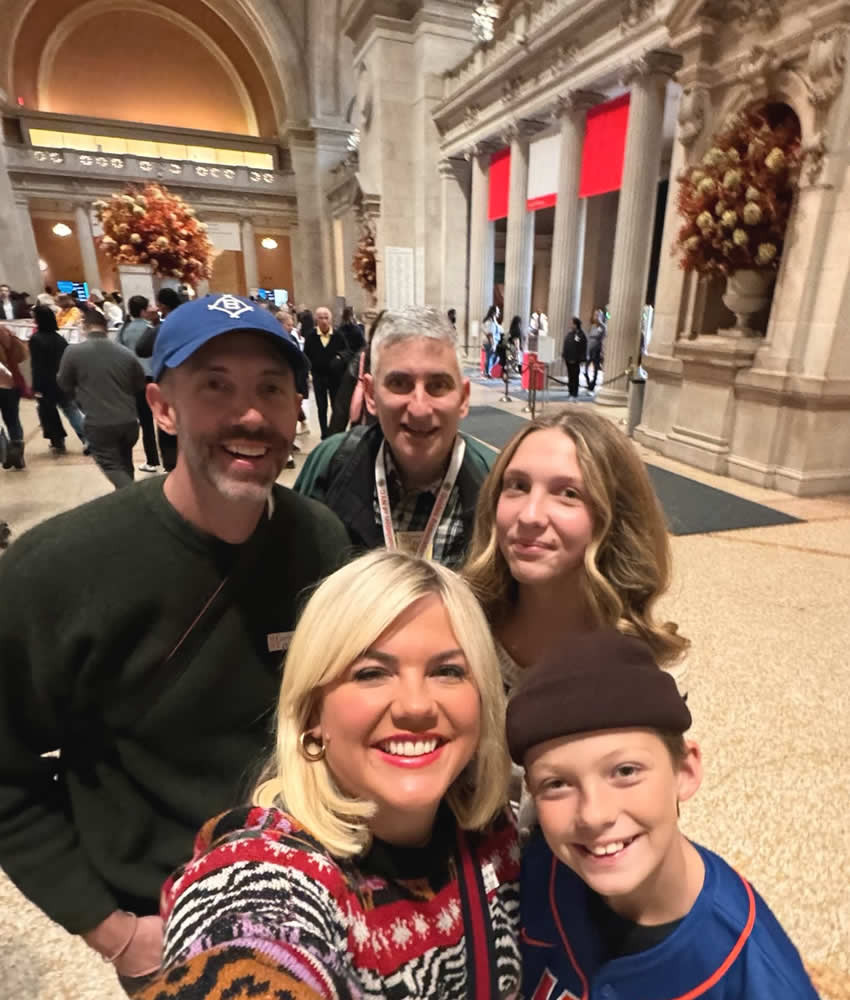

Insider Walking Tour of the Metropolitan Museum of Art
I worked for the Assistant Curator of the Department of Twentieth Century Architecture and Design at the Metropolitan Museum of Art and studied Art History at Columbia University. I got behind the scenes looks at how art is stored, exhibits are planned, how art is preserved, obtained and researched; as well as tours of European, Asian, Greek and Roman, and Egyptian Departments.
I worked in the offices behind the walls and in the floors between the floors.
Did you know that most of the museum's two thousand employees love art? Every two years there is a secret exhibit of art, some of which should be on public exhibit.
If I could do it all over again, I'd be a museum architect, or keep working at the Met. Every day I'm there is inspirational.
Besides being beside my wife, the Metropolitan Museum of Art is my favorite place. It is my living room, and my time and space machine. I am lucky to be able tour the wonders of the Met.
The Metropolitan Museum of Art has specific rules for private tours that we all must comply with, or all my tours, including yours, will be banned. You must purchase your tickets with me, while I pick up my required badge. Members and local residents' free tickets are not honored; I am sad to say.
My experience there allows us to visit efficiently, get great pictures, and get the Met Museum's peculiar stories. Allow me to customize your Met tour to fit your specific needs and interests.
I also know how to engage your whole family. We will have a great time on a Met Museum private tour.
Read more of my 5 star reviews of the walking tour on my Reviews Page.
Metropolitan Museum of Art Insider Tour
Advance Placement (AP®) Art History Met Museum Tour

Kids love touring the Metropolitan Museum of Art with Jared!

A joyful selfie with a family, capturing the excitement after a personalized tour of the Met Museum! Smiling faces, memorable moments, and a day filled with art and discovery!

Rave review of Met Museum tour by a 12 year-old

Step into the magic of the Metropolitan Museum of Art with Jared, an expert guide who makes history come alive. This tour transforms a museum visit into an unforgettable journey through time. Perfect for history buffs and anyone curious about the past!

Meet Jared at the Great Hall – Your Met Museum Adventure Starts Here!

Let's take a Night Tour!!'

Washington Crossing the Delaware. Photo by Jared Goldstein. How did and does this painting promote democracy?

What are some of the stories behind some of these suits of armor? How are they art and artistry?

Ugolino and His Sons - just one of the masterpieces on display at the Met Museum.
More information

A great holiday tradition, in the museum's oldest wing

Find out about what happens behind the domes, and how and why there are always fresh flowers.

How is Egyptian Art magical, transforming reality by feeding the souls of the dead? How is it related to power and politics? How does art sustain ourselves?

The Temple of Dendur - one of the iconic and most beloved works of art at The Met.

Jackson Pollack's Autumn Rhythm which brings to mind Louis Armstrong, Bebop Jazz, the end of World War II's horror, the existential threat of the atomic age, the rise and fall of great powers, and how the CIA promoted this art!

What is seen, and what is stored? The Met's unique Visible Storage study collection makes us wonder, and we connect with the past and the future. How is it that Van Gogh only sold one painting out of thousands, yet the Met Museum's collection of a few of them is worth billions of dollars?

Typically, my tours emphasize America's largest collection of Egyptian Art. How is this statue of Queen Hapshetsut related to the ultimate mansplainer Thutmose III?

There are so many things to observe and share about this bedroom from near Pompeii, involving perspective, wealth, technology, ironies, and who paid to bring it to the Metropolitan Museum of Art.

Jared, your tour guide, at the Pompeii room - get this close!

Self Portrait with a Hat. Why did he do so many self portraits? How is this like the Met's Rembrandt self portrait? How is it different than Egyptian Art?

Experience the grandeur of the ancient world right here in the museum